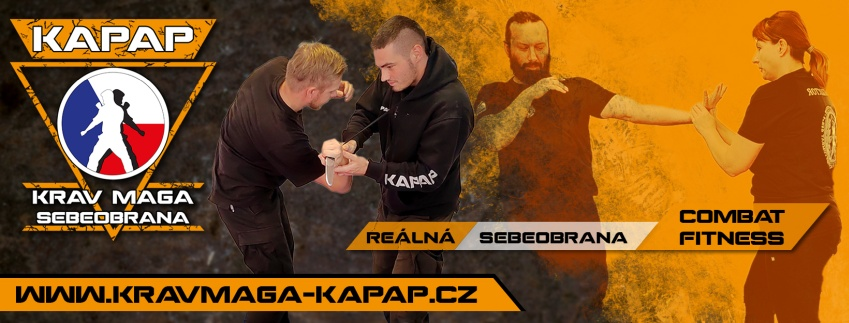

Krav Maga a KAPAP jsou 2 systémy reálného boje a oba pocházejí z Izraele. Vznikly v 50. letech 20. století a každý systém má jiného zakladatele. Krav Maga byla založena Imi Lichtenfeldem a KAPAP Havivem Galiskem. Oba systémy se pak zabývají bojem beze zbraně, obranou proti zbraním a k výcviku patří samozřejmě i střelba.
Krav Maga (hebrejsky: boj zblízka) byla založena Imi Lichtenfeldem (1910-1998),
slovenským Židem a sportovcem, který díky své velmi dobré kondici a znalostem bojových umění cvičil nově formovanou
RAF IDF v letech (1948-1968).
KAPAP (Krav Panim el Panim, hebrejsky: boj v tváří v tvář) byl založen Havivem Galiskem (1930-2005), jehož prvorozeným synem je Moshe Galisko, současný představitel IKA (International KAPAP Association), tedy asociace, pod jejíž záštitou cvičíme. Haviv žil v Palestině a bojoval za nezávislost Izraele v rámci jednotek Palmach.